8.8.4. MIPI DSI
名词解释
缩写 |
全称 |
含义 |
BPP |
Bits per Pixel |
像素深度 |
CSI |
Camera Serial Interface |
摄像串行接口 |
DBI |
Display Bus Interface |
显示总线接口 |
DCS |
Display Command Set |
显示命令集 |
DSI |
Display Serial Interface |
显示串行接口 |
Fps |
Frames per second |
每秒传输帧数 |
Mbps |
Megabits per second |
每秒传输的兆bit位 |
PHY |
Physical Layer |
物理层 |
DI |
Data Indentifier |
数据识别 |
HS |
High Speed |
高速 |
LP |
Low Power |
低功耗 |
EoTp |
End of Transmission Packet |
传输包结尾 |
SoT |
Start of Transmission |
传输开始 |
Lps |
Low Power State |
低功耗状态 |
PH |
Packet Head |
包头 |
PCLK |
Pixel Clock |
像素时钟 |
DE |
Data Enable |
数据使能 |
FR |
Frame Rate |
帧率 |
HSYNC |
Horizontal Sync |
水平同步 |
HLW/HPW |
Horizontal Low Pulse Width |
水平同步信号宽度 |
HSA |
Horizontal Sync Active |
水平同步有效，等同HPW |
HBP |
Horizontal Back Porch |
水平后肩 |
HACT |
Horizontal Active |
水平有效区，即宽度 |
HFP |
Horizontal Front POrtch |
水平前肩 |
VSYNC |
Vertical Sync |
垂直同步 |
VLW/VPW |
Vertiacl Low Pulse Width |
垂直同步信号宽度 |
VSA |
Vertiacl Sync Active |
垂直同步宽度，等同VPW |
VBP |
Vertiacl Back Porch |
垂直后肩 |
VACT |
Vertiacl Active |
垂直有效区，即高度 |
VFP |
Vertiacl Front Porch |
垂直前肩 |
备注
MIPI lane0是双向的(低速模式双向，高速模式也只能是单向)，其他的lane只能是单向 低速模式: LP 1-1.2V, 空闲电平(LP11),DP DN是1.2V 高速模式HS: 100-300mv(典型值200mv)
MIPI DSI链路层支持两种工作模式，一种是 视频模式(Video mode) , 另一种是 命令模式(Command mode)
8.8.4.1. 两种工作模式的区别
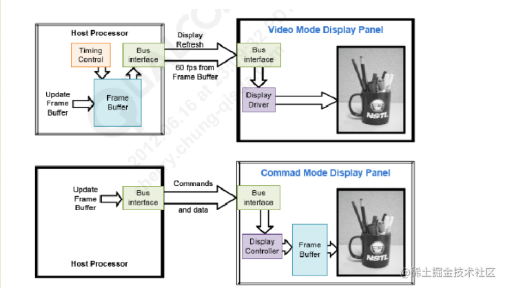
由上图可知
video mode主要针对芯片内没有frame buffer(ram)的lcd屏进行操作的，无论当前显示是否由数据更新，DSI host端移植送数据给panel显示， 主控要按照lcd的刷新率持续发送pixel数据，与传统的rgb接口类似，主机会持续刷新显示器．由于不使用专用的数据信号v传输同步信息，控制信号 和RGB数据是以报文的形式通过MIPI总线传输的.链路层为video mode时，物理层只能为HS模式Command mode针对芯片内含有frame buffer(ram)的cpu屏进行操作的，只要当前数据画面有变化时，DSI host端才送数据给panel显示，主控只在需要更新 显示图像的时候发送pixel数据，其他时候芯片自己从内部buffer里取数据显示，MIPI总线控制器不需要定期刷新显示器，这种屏幕的分辨率一般来说比较小．当链路层为command mode时，物理层可以为HS模式，也可以为LP模式
8.8.4.2. video mode时序控制模式
video mode视频模式在传输时由三种时序控制模式，根据外围设备的要求决定来使用哪种时序控制模式比较合适，这三种模式为 Non-Burst Mode with Sync Pulses ,
Non-Burst Mode with Sync Events 以及 Burst mode ,其中Burst mode表示RGB数据传输部分时间会被压缩
8.8.4.2.1. Non-Burst MOde with SYnc Pulses
这个模式可以使外围设备可以准确的重构原始视频时序，包括同步信号，目标是通过DSI串行链路准确的传送DPI时序．这包括对应的DPI像素传输速率和同步脉冲等timing的 宽度．因此，会使用发送同步脉冲的开始和结束的时序包来定义同步周期．此模式的输出示意图如下
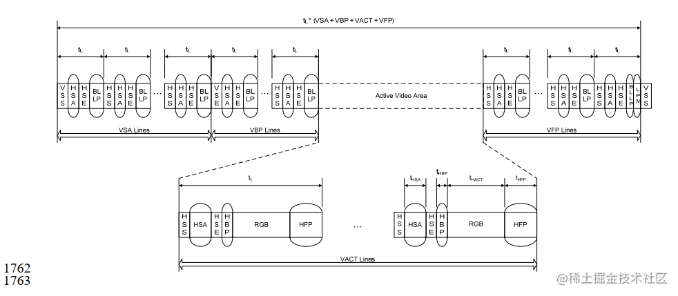
上图各数据包的定义如下
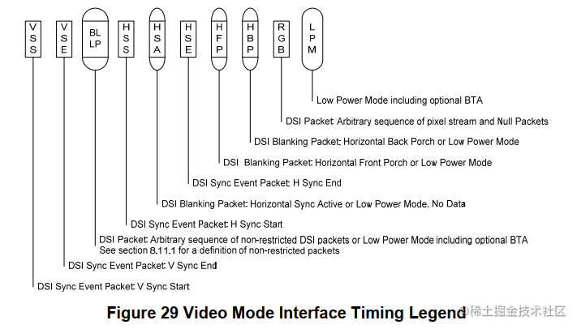
VSS: Vertical Sync Start
VSE: Vertical Sync End
BLLP: Arbitrary sequence of non-restricted DSI packets or Low Power Mode incluing optional BTA.
HSS: Horizontal Sync Start
HAS: Horizontal Sync Active or Low Power Mode, No Data
HSE: Horizontal Sync End
HFP: Horizontal Front Porch or Low Power Mode
HBP: Horizontal Back Porch or Low Power Mode
RGB: Arbitrary sequence of pixel stream and Null Packets
LPM: Low Power Mode incuding optional BTA
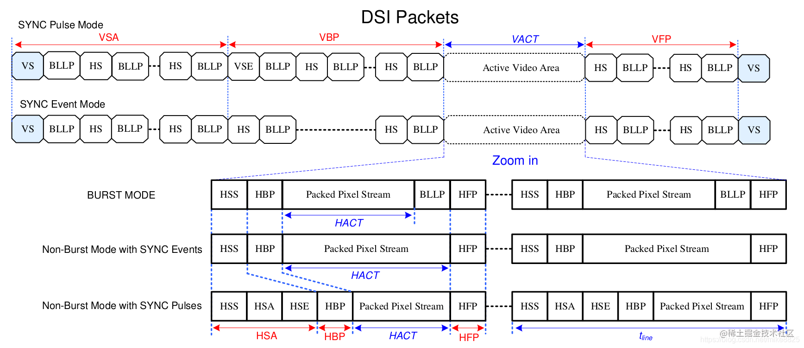
由上述时序图可知，MIPI host要输入一帧数据，首先会发送VSPW(VSA lines/帧同步信号)的空数据包—–>发送VBP lines的空数据包——>发送VACT lines(屏宽) 的有效RGB数据，其中每一行都包含HSS行开始信号+HSA空数据包+HSE数据包+HBP数据包+RGB数据+HFP数据包．最后发送VFP lines的空数据包．这样屏幕就刷满了一帧的数据
8.8.4.2.2. Non-Burst Mode with sync Events
这种模式与第一种模式类似，但是不需要准确的重新构建同步数据包，而只发送一种叫做 Sync event 的包
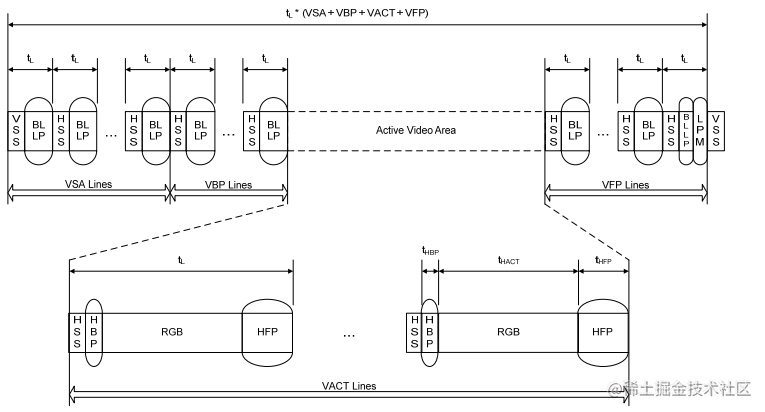
8.8.4.2.3. Burst Mode
在这个模式像素数据的传输时间会被压缩，留下更多的时间给LP模式或者在DSI链路上传输的数据
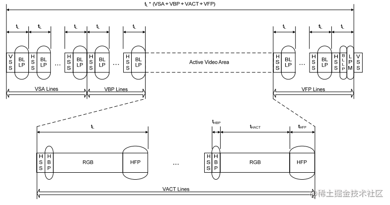
mipi dsi clk存在两种工作模式，一种是连续时钟模式，传输过程中不会切换LP状态，另一种是非连续时钟信号模式，每传输完一帧图像数据，帧blanking时会切换 为LP状态．
8.8.4.3. Command模式
只有当LCD面板带有显示控制器和帧缓冲区的时候才能使用Command模式，数据传送的格式一般是在像素数据后跟着命令参数和命令．主机端可以读写LCD控制器的寄存器 和帧缓存区的内容．
每一帧数据开始传输的时间可以由TE信号(由LCD面板输出)来控制也可以使用其的外接管脚，TE线或是直接通过DSI接口传送的TE触发信息
为了使用CMD模式，LCD屏需要内置一个时序控制器和缓冲区存储空间(一般为RAM).为了防止出现Tearing Effect(且屏或分屏),LCD屏需要把它的时序时间信息传递给主机端． 在CMD模式下传送这种时序事件可以通过3种方式来实现．
自动模式: 当DSI_VC_TE_i[31]寄存器的TE_START位被设置成0x01的时候软件开始传送数据．一旦数据传送完成TE_START位会被硬件自动清零．这种模式让数据的传送可以通过 软件应用来手动或者使用TE中断来控制．如果数据传送和TE信号不匹配，就有可能出现切屏或分屏的现象
DSI物理TE触发器: MIPI DSI标准定义来一个从屏到主机端的TE触发信号包，一旦收到这种数据包，Host的像素数据会自动开始传送
备注
DSI Video模式: 主机需要持续刷新显示器，因此相比CMD模式更耗电．可以不带帧缓冲器 DSI Cmd模式: MIPI总线控制器使用命令报文来发送像素数据，需要帧缓冲区，不需要定期刷新数据
8.8.4.4. DSI 数据包
实例：
{cmd} , {par...}
{0xF0}, {0x5A,0x5A}, ## cmd: 0xF0; 数据:0x5A,0x5A
{0xF1}, {0xA5,0xA5},
...
{0x36}, {0x08}, ## cmd: 0x36; 数据:0x8
...
{0x11}, ## cmd: 0x11; 无数据
8.8.4.4.1. 短数据包
短数据包(Short Packet)共4个字节，包括:1字节 DI 2字节 data 和1字节 ECC
格式: DI + DATA0~1 + ECC
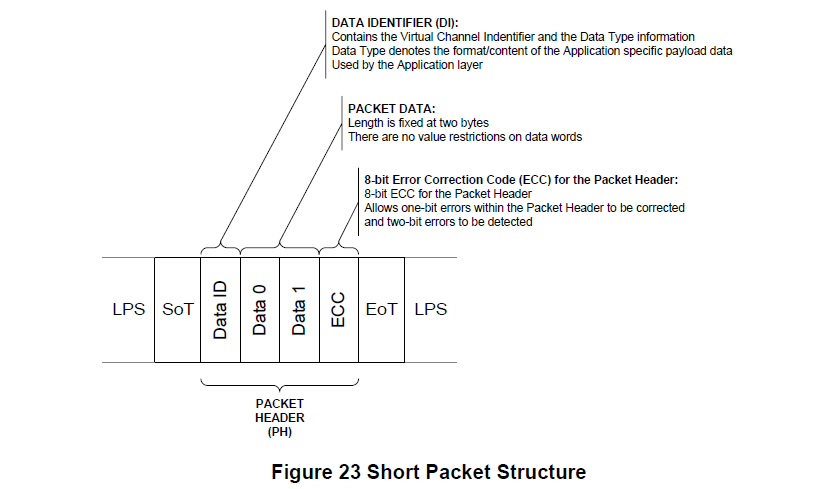
8.8.4.4.2. 长数据包
长数据包(Long Packet)包括: 4字节包头，数据和2字节校验
格式: PH(DI + Word Count + ECC) + Packet Data + PF
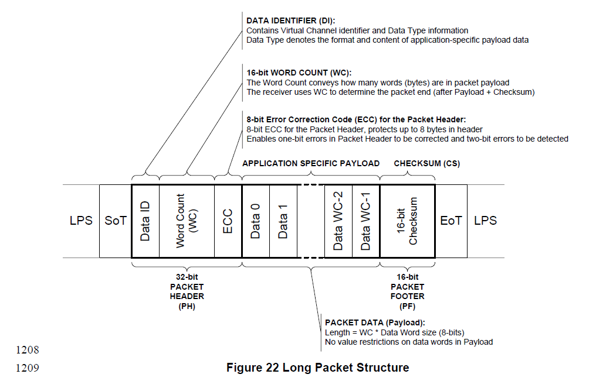
备注
DI[7:6]: 虚拟通道ID DI[5:0]: 数据类型
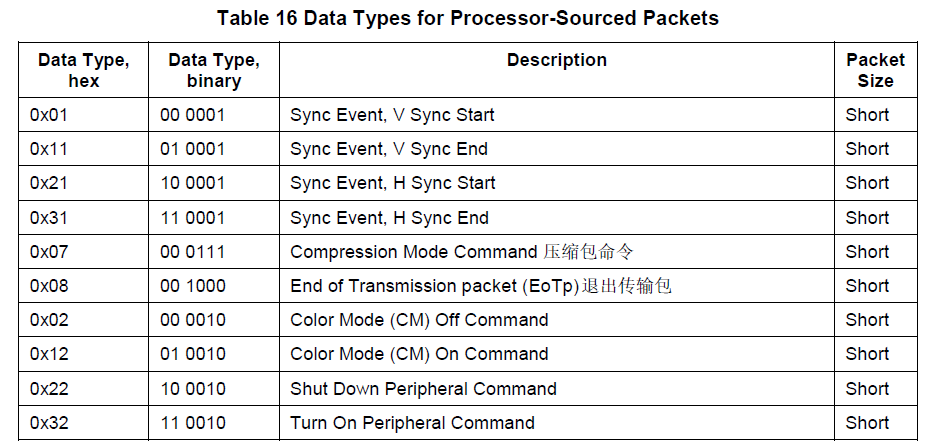
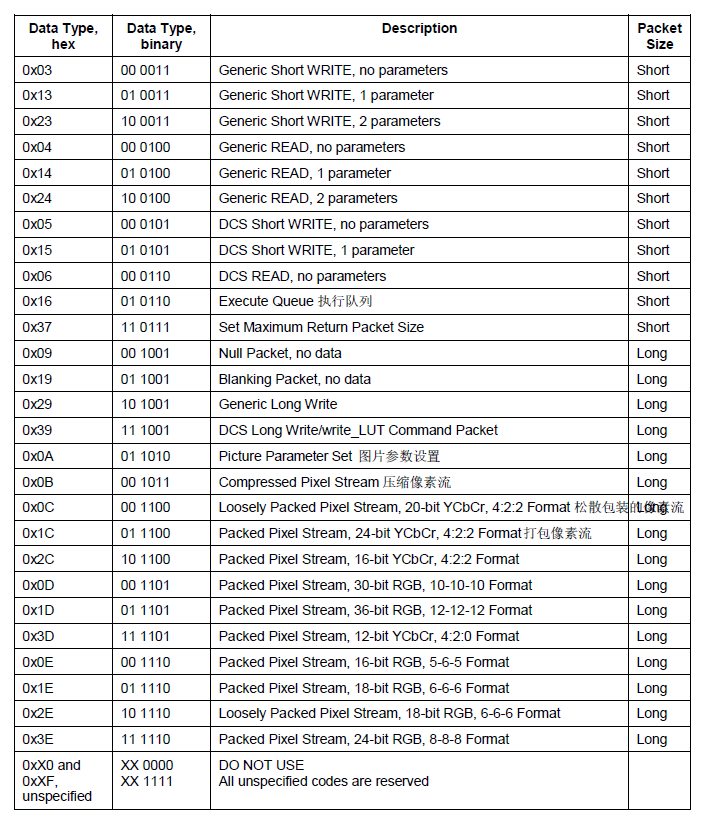
DI中Data Type部分值的含义如下:
0x5: 没有参数，即只有一个CMD,如上面示例中的命令0x11
0x15: 一个参数，即1个CMD + 1个parameter, 如上面示例中的命令0x36
0x39: 长包写，即1个CMD + 2个及以上的parameter,如上面示例中的的命令0XF0 0xF1
按照MIPI DSI协议组包后的数据为
0x39,3,ECC,0xF0,0x5A,0x5A,PF
0x39,3,ECC,0xF1,0xA5,0xA5,PF
...
0x15,0x36,0x08,ECC
...
0x05,0x11,0x0,ECC
8.8.4.5. DSI命令模式
MIPI DSI在初始化时会先进入Escape mode, 然后0x87(低字节在前)进入Low speed mode,频率为10Mhz以下．
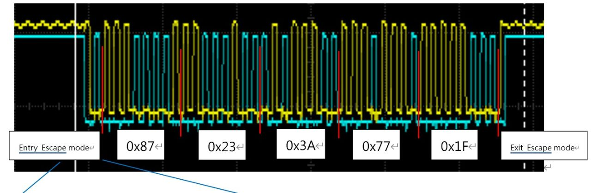
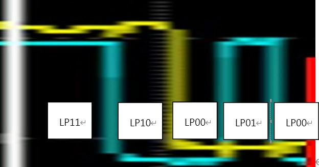
Entry Escape mode: LP11—>LP10—>LP00—>LP01—->LP00
Exit Escape mode: LP10—>LP11
命令行为: 0x23(Generic short Write, 2 paramters) 0x3A(register) 0x77(Data) 0x1F(Ecc)